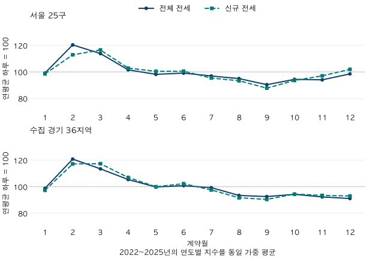

계절과 계약 달력 · 전세의 1~2월
전세 계약은 1~2월에 몰릴까? 서울·경기 4년 비교
2022~2025년 서울·수집 경기 전세 계약을 달력일로 보정해 비교했습니다. 신규·갱신·미상, 61개 지역과 매매·월세 비교를 통해 신학기 전세 수요라는 해석의 한계를 확인합니다.
분석 기간 · 2022~2025년 계약월 · 완결 48개월 | 자료 기준일 · 자료 2026-10-04 · 집계 2026-10-10
신학기 전에 전세를 구하는 사람이 몰리니 1~2월에는 계약을 서둘러야 할까요? 2022~2025년 관측된 아파트 전세 계약을 하루 단위로 맞추면, 1~2월은 연평균보다 서울·수집 경기 모두 약 9.2% 많았습니다. 다만 신규 전세만 보면 차이가 줄고, 지역과 해에 따라 반대 결과도 나옵니다. 계약 건수가 많다는 말과 내게 유리한 계약 시기라는 말은 구분해야 합니다.
이사철을 보려면 어느 날짜를 세야 할까요?
이 글은 서울 25개 구와 수집 경기 36개 시·구의 계약 체결월을 셉니다. 전체 전용면적을 포함하고, 양의 보증금에 월 납부액이 0인 계약을 전세로 분류했습니다. 월 납부액이 있는 계약은 월세로 따로 비교합니다. 인천과 미수집 경기 지역은 포함하지 않습니다.
국토부 아파트 전월세 자료는 신고자료와 확정일자 자료를 합친 것입니다. 신규·갱신이라고 적힌 계약과 구분이 없는 계약을 나눴습니다. 구분 미상은 신규가 아닙니다. 같은 집의 입주일이나 학생 가구 여부를 확인할 수 없으므로, 계약이 많은 달을 곧바로 학군 이사의 효과라고 부르지 않습니다.
먼저 달의 길이를 맞춥니다. 평년의 1~2월은 59일로 365일의 약 16.2%입니다. 두 달이라는 이유로 1년의 2/12인 16.7%만 기준으로 삼으면, 짧은 2월을 놓칩니다. 2024년은 윤년이므로 60일과 366일을 사용했습니다.
1~2월 전세 계약은 해마다 얼마나 많았나요?
전체 전세의 하루 기준 상대 활동은 서울 105.7~114.0, 수집 경기 107.6~112.2였습니다. 두 광역 모두 4년 내내 100을 넘었습니다. 서울의 2022년은 129,352건 중 23,832건이 1~2월 계약으로, 연간 건수의 18.4%를 차지했습니다. 일수까지 맞추면 연평균 하루보다 약 14.0% 많았습니다.
| 연도 | 연간 건수 | 1~2월 건수 | 건수 비중 | 전체 전세 지수 | 신규 전세 지수 |
|---|---|---|---|---|---|
| 2022 | 129,352 | 23,832 | 18.4% | 114.0 | 105.9 |
| 2023 | 147,723 | 25,253 | 17.1% | 105.8 | 99.1 |
| 2024 | 130,855 | 23,928 | 18.3% | 111.5 | 106.0 |
| 2025 | 138,495 | 23,656 | 17.1% | 105.7 | 110.3 |
| 연도 | 연간 건수 | 1~2월 건수 | 건수 비중 | 전체 전세 지수 | 신규 전세 지수 |
|---|---|---|---|---|---|
| 2022 | 176,427 | 30,696 | 17.4% | 107.6 | 103.0 |
| 2023 | 189,574 | 33,351 | 17.6% | 108.8 | 105.9 |
| 2024 | 172,906 | 31,801 | 18.4% | 112.2 | 110.1 |
| 2025 | 168,873 | 29,544 | 17.5% | 108.2 | 107.8 |
4년 평균은 각 연도의 지수를 같은 비중으로 평균했습니다. 계약이 많은 해에 더 큰 표를 주지 않은 것입니다. 1~2월의 평균 지수는 서울 109.2, 수집 경기 109.2입니다. 평균의 비슷한 숫자가 지역별로 같은 패턴을 뜻하지는 않습니다.

두 달을 합친 결과가 1월과 2월 각각의 결과는 아닙니다. 전체 전세의 1월 평균 지수는 서울 99.2, 수집 경기 98.8로 100보다 낮았고, 2월은 각각 120.4와 120.8로 높았습니다. 3월도 100보다 높으므로 1~2월만 특별한 시기로 떼어 읽지 않는 것이 좋습니다. 이 비교는 연간 규모와 월 길이를 맞췄지만, 해 안에서 진행된 상승·하락 국면이나 명절·요일 구성까지 제거하지는 않았습니다.
신규 전세만 보거나 한 해를 빼면 결론이 바뀔까요?
신규 계약만 보면 1~2월의 차이가 작아집니다. 서울 신규 전세의 평균 지수는 105.3이며 2023년에는 99.1이었습니다. 수집 경기 신규 전세는 평균 106.7로 4년 모두 100을 넘었습니다. 전체 계약에는 갱신과 구분 미상이 함께 있으므로, 전체 전세의 증가를 새로 집을 구하는 사람의 증가로 바꾸어 읽을 수 없습니다.
구분 미상 전세의 평균 지수는 서울 137.4, 수집 경기 148.0으로 더 컸습니다. 하지만 누구의 계약인지 모르는 표본입니다. 높은 지수를 특정 수요층의 증거로 삼기보다, 공개된 계약 분류에 따라 계절 비교가 달라진다는 경고로 읽는 편이 적절합니다.
| 계약 분류 | 4년 평균 | 연도별 범위 | 100 초과 연도 | 2022~2024 평균 | 한 해 제외 평균 범위 |
|---|---|---|---|---|---|
| 전체 전세 | 109.2 | 105.7~114.0 | 4/4 | 110.4 | 107.7~110.4 |
| 신규 전세 | 105.3 | 99.1~110.3 | 3/4 | 103.7 | 103.7~107.4 |
| 갱신 전세 | 112.2 | 97.9~119.1 | 3/4 | 116.9 | 109.8~116.9 |
| 구분 미상 전세 | 137.4 | 124.6~167.9 | 4/4 | 139.4 | 127.3~141.7 |
| 월세 계약 | 108.9 | 102.2~118.4 | 4/4 | 109.9 | 105.8~111.2 |
| 매매 계약 | 77.1 | 58.0~100.1 | 1/4 | 76.4 | 69.5~83.5 |
| 계약 분류 | 4년 평균 | 연도별 범위 | 100 초과 연도 | 2022~2024 평균 | 한 해 제외 평균 범위 |
|---|---|---|---|---|---|
| 전체 전세 | 109.2 | 107.6~112.2 | 4/4 | 109.6 | 108.2~109.8 |
| 신규 전세 | 106.7 | 103.0~110.1 | 4/4 | 106.3 | 105.6~108.0 |
| 갱신 전세 | 109.8 | 106.3~113.5 | 4/4 | 110.9 | 108.5~110.9 |
| 구분 미상 전세 | 148.0 | 109.2~191.3 | 4/4 | 141.6 | 133.6~161.0 |
| 월세 계약 | 98.4 | 91.5~111.4 | 1/4 | 100.7 | 94.1~100.7 |
| 매매 계약 | 82.2 | 68.6~99.7 | 0/4 | 86.8 | 76.4~86.8 |
전체 전세는 2025년을 제외하거나 한 해씩 빼도 평균 지수가 100보다 높았습니다. 따라서 특정 한 해만이 만든 평균은 아닙니다. 다만 네 해의 안정성은 앞으로도 반복된다는 보장이 아닙니다.
특히 국토부 신고 안내에 따르면 임대차 신고 과태료 계도기간은 2025년 5월까지였습니다. 2025년은 이 변화의 전후가 섞인 연도입니다. 같은 안내는 금액이 변하지 않은 갱신계약을 신고대상에서 제외한다고 설명합니다. 자료에는 확정일자 경로도 있으므로, 이 사실만으로 누락 규모를 계산하거나 제도 변화의 거래량 효과를 확정할 수는 없습니다.
전세와 매매도 다릅니다. 매매의 1~2월 평균 지수는 서울 77.1, 수집 경기 82.2였습니다. 월세는 서울 108.9, 수집 경기 98.4로 방향이 달랐습니다. 서울 매매의 월별 계약 달력을 임대차에 그대로 적용하거나, 전월세 전체 구성을 전세 한 종류의 계절성으로 설명하기 어려운 이유입니다.
모든 지역에서 4년 내내 반복됐나요?
그렇지는 않았습니다. 전체 전세의 1~2월 지수가 4년 모두 100을 넘은 곳은 서울 25구 중 11구, 수집 경기 36지역 중 16곳입니다. 신규 전세만으로 같은 조건을 확인하면 각각 6구와 8곳입니다. 광역 평균을 관심 지역에 그대로 적용하기 전에 아래 연도별 값을 확인하세요.
지역의 현재 행정구분을 과거 계약에도 적용한 비교입니다. 학군 경계나 신도시 경계와 같지 않으며, 지역별 세대 구성·입주물량·신고 포착의 차이를 통제한 순위가 아닙니다. 높은 지수는 전세가 비싸거나 매물이 풍부하다는 뜻도 아닙니다.
서울 25구의 연도별 결과 보기
| 지역 | 2022 | 2023 | 2024 | 2025 | 전체 평균 | 신규 평균 | 전체 100 초과 연도 |
|---|---|---|---|---|---|---|---|
| 종로구 | 125.4 | 93.2 | 121.3 | 112.8 | 113.2 | 110.4 | 3/4 |
| 중구 | 119.0 | 107.4 | 126.3 | 101.7 | 113.6 | 115.2 | 4/4 |
| 용산구 | 106.6 | 93.7 | 119.5 | 103.2 | 105.8 | 102.8 | 3/4 |
| 성동구 | 121.0 | 112.2 | 114.9 | 96.6 | 111.2 | 105.5 | 3/4 |
| 광진구 | 122.9 | 103.1 | 115.4 | 94.5 | 109.0 | 101.2 | 3/4 |
| 동대문구 | 110.5 | 102.7 | 106.4 | 120.2 | 109.9 | 112.6 | 4/4 |
| 중랑구 | 126.9 | 93.2 | 136.9 | 88.1 | 111.3 | 111.2 | 2/4 |
| 성북구 | 113.8 | 115.8 | 109.0 | 110.2 | 112.2 | 107.0 | 4/4 |
| 강북구 | 109.9 | 94.9 | 111.8 | 102.0 | 104.6 | 102.6 | 3/4 |
| 도봉구 | 107.1 | 95.3 | 112.5 | 88.0 | 100.7 | 101.3 | 2/4 |
| 노원구 | 119.6 | 98.5 | 120.1 | 97.4 | 108.9 | 106.2 | 2/4 |
| 은평구 | 91.9 | 93.8 | 99.7 | 111.7 | 99.3 | 94.1 | 1/4 |
| 서대문구 | 126.7 | 130.6 | 122.0 | 115.5 | 123.7 | 119.1 | 4/4 |
| 마포구 | 118.8 | 119.2 | 104.4 | 107.9 | 112.6 | 104.2 | 4/4 |
| 양천구 | 103.1 | 93.5 | 107.2 | 94.1 | 99.4 | 90.2 | 2/4 |
| 강서구 | 86.8 | 110.5 | 92.3 | 111.3 | 100.2 | 97.1 | 2/4 |
| 구로구 | 111.7 | 100.0 | 114.5 | 100.6 | 106.7 | 106.3 | 3/4 |
| 금천구 | 111.0 | 123.0 | 118.7 | 117.6 | 117.6 | 115.5 | 4/4 |
| 영등포구 | 115.6 | 105.3 | 117.7 | 101.6 | 110.0 | 105.5 | 4/4 |
| 동작구 | 111.5 | 108.9 | 106.6 | 104.7 | 107.9 | 102.2 | 4/4 |
| 관악구 | 112.4 | 115.5 | 111.4 | 111.9 | 112.8 | 110.1 | 4/4 |
| 서초구 | 115.0 | 85.5 | 108.0 | 85.5 | 98.5 | 97.0 | 2/4 |
| 강남구 | 117.6 | 100.4 | 123.9 | 100.0 | 110.5 | 104.8 | 4/4 |
| 송파구 | 125.0 | 124.6 | 111.9 | 126.0 | 121.9 | 122.1 | 4/4 |
| 강동구 | 133.3 | 112.8 | 98.3 | 126.4 | 117.7 | 109.7 | 3/4 |
수집 경기 36지역의 연도별 결과 보기
| 지역 | 2022 | 2023 | 2024 | 2025 | 전체 평균 | 신규 평균 | 전체 100 초과 연도 |
|---|---|---|---|---|---|---|---|
| 수원시 장안구 | 123.1 | 77.4 | 118.1 | 84.0 | 100.7 | 98.7 | 2/4 |
| 수원시 권선구 | 133.2 | 98.0 | 124.4 | 108.8 | 116.1 | 118.5 | 3/4 |
| 수원시 팔달구 | 70.1 | 88.4 | 85.0 | 101.2 | 86.2 | 86.0 | 1/4 |
| 수원시 영통구 | 115.2 | 109.9 | 113.9 | 105.8 | 111.2 | 103.1 | 4/4 |
| 성남시 수정구 | 70.0 | 80.5 | 107.6 | 78.4 | 84.1 | 96.7 | 1/4 |
| 성남시 중원구 | 61.2 | 162.3 | 98.0 | 137.0 | 114.6 | 115.8 | 2/4 |
| 성남시 분당구 | 124.6 | 104.7 | 126.2 | 103.7 | 114.8 | 107.1 | 4/4 |
| 의정부시 | 107.6 | 113.1 | 110.4 | 114.9 | 111.5 | 112.2 | 4/4 |
| 안양시 만안구 | 99.9 | 117.6 | 102.1 | 141.0 | 115.1 | 109.4 | 3/4 |
| 안양시 동안구 | 136.4 | 120.7 | 132.3 | 121.7 | 127.8 | 127.0 | 4/4 |
| 부천시 원미구 | 116.1 | 98.7 | 117.5 | 97.5 | 107.5 | 106.0 | 2/4 |
| 부천시 소사구 | 105.9 | 114.0 | 119.2 | 101.3 | 110.1 | 110.2 | 4/4 |
| 부천시 오정구 | 102.7 | 102.9 | 112.0 | 96.2 | 103.5 | 104.6 | 3/4 |
| 광명시 | 112.7 | 114.1 | 113.4 | 92.8 | 108.3 | 100.7 | 3/4 |
| 평택시 | 101.4 | 122.7 | 103.4 | 114.6 | 110.5 | 108.1 | 4/4 |
| 안산시 상록구 | 106.9 | 104.6 | 112.0 | 111.9 | 108.8 | 105.6 | 4/4 |
| 안산시 단원구 | 103.2 | 118.8 | 113.5 | 110.1 | 111.4 | 112.0 | 4/4 |
| 고양시 덕양구 | 97.3 | 112.6 | 104.1 | 122.4 | 109.1 | 108.8 | 3/4 |
| 고양시 일산동구 | 114.8 | 102.2 | 116.1 | 108.8 | 110.5 | 103.7 | 4/4 |
| 고양시 일산서구 | 116.4 | 104.6 | 118.1 | 116.1 | 113.8 | 110.1 | 4/4 |
| 과천시 | 103.9 | 136.0 | 113.8 | 124.1 | 119.4 | 124.7 | 4/4 |
| 구리시 | 118.0 | 99.8 | 116.6 | 95.7 | 107.5 | 108.9 | 2/4 |
| 남양주시 | 102.9 | 109.0 | 101.9 | 104.3 | 104.5 | 104.1 | 4/4 |
| 군포시 | 109.8 | 109.6 | 117.2 | 110.4 | 111.8 | 108.9 | 4/4 |
| 의왕시 | 147.8 | 89.5 | 150.5 | 78.6 | 116.6 | 108.3 | 2/4 |
| 하남시 | 97.1 | 112.8 | 97.3 | 101.3 | 102.1 | 102.9 | 2/4 |
| 용인시 처인구 | 80.2 | 80.2 | 98.1 | 116.4 | 93.7 | 99.4 | 1/4 |
| 용인시 기흥구 | 120.0 | 98.3 | 123.2 | 99.7 | 110.3 | 105.1 | 2/4 |
| 용인시 수지구 | 113.5 | 112.5 | 114.5 | 107.2 | 111.9 | 104.7 | 4/4 |
| 파주시 | 89.1 | 106.4 | 97.1 | 117.0 | 102.4 | 102.1 | 2/4 |
| 김포시 | 91.9 | 112.4 | 101.8 | 108.5 | 103.6 | 103.9 | 3/4 |
| 화성시 만세구 | 92.2 | 118.1 | 114.1 | 127.9 | 113.1 | 117.4 | 3/4 |
| 화성시 효행구 | 78.3 | 70.3 | 113.3 | 113.1 | 93.8 | 94.8 | 2/4 |
| 화성시 병점구 | 117.5 | 129.4 | 111.7 | 123.4 | 120.5 | 118.8 | 4/4 |
| 화성시 동탄구 | 113.0 | 121.8 | 116.1 | 108.3 | 114.8 | 106.6 | 4/4 |
| 광주시 | 99.2 | 93.7 | 110.3 | 117.3 | 105.1 | 106.1 | 2/4 |
계약을 준비할 때는 무엇을 확인하면 될까요?
- 날짜를 맞춥니다. 계약월과 원하는 입주월은 다를 수 있습니다. 이 표로 실제 입주 일정을 대신 정하지 않습니다.
- 필요한 계약의 분모를 고릅니다. 새로 전세를 찾는 상황이라면 전체뿐 아니라 신규 계약의 반복 여부와 구분 미상을 함께 봅니다.
- 관심 지역과 올해 조건을 확인합니다. 과거 광역 평균만으로 현재 경쟁·매물·입주물량을 판단하지 않습니다.
- 실제 제시 조건을 비교합니다. 보증금·월세·입주일·자금 비용이 맞는지 확인합니다. 건수가 많은 달이 더 싼 달이라는 결과는 여기서 얻지 못했습니다.
1~2월 전세 계약의 상대 활동은 관측된 네 해에 두 광역 모두 높았습니다. 그렇지만 신규 계약과 지역별 결과는 균일하지 않았습니다. 계약을 서두를 이유로 쓰기보다, 이사철이라는 말이 어떤 날짜와 분모에서 나왔는지 확인하는 자료로 활용할 수 있습니다.
원 집계·계산·출처 확인하기
국토부 아파트 전월세와 아파트 매매 실거래 상세 자료의 정제 계약을 사용했습니다. 2022~2025년 완결 48개월, 서울 25구·수집 경기 36지역, 전체 전용면적입니다. 임대차는 금액/면적 무효·분류 충돌·토지임대부를 제외하고, 미상 분류는 남겼습니다. 갱신은 권리 사용 확인과 권리 미상 갱신을 합쳤습니다. 매매는 해제·직거래 등이 제외되는 정제 기준이며 임대차에 없는 해제 개념을 만들지 않았습니다.
자료 기준일 2026-10-04. 과거 계약을 현재 보유 자료에서 다시 센 회고 집계로, 당시 알려졌던 정보만으로 계산한 것은 아닙니다. 계약 행 2,250,265건의 분류와 매매 472,894건을 별도 계산으로 대조했고, 기존 전월세 비중·매매 달력 글의 중첩 집계도 일치했습니다. 학군·학생 가구·이사일 정보와 정책 인과·가격모형은 사용하지 않았습니다.
공개하는 양수 건수는 최소 10건, 지역의 연간 분모는 30건 이상입니다. 신규·나머지, 1~2월·나머지로 나눈 칸이 기존 공개 합계와 겹쳐 작은 값이 드러나지 않는지도 확인했습니다. 단지·개별 계약 식별자는 공개하지 않습니다. 반올림 전 집계는 공개 집계 파일(JSON)에 있으며 아래 표는 자바스크립트 없이도 읽을 수 있습니다.
서울 월별 원 건수
| 계약월 | 전체 전세 | 신규 | 갱신 | 미상 | 월세 | 매매 |
|---|---|---|---|---|---|---|
| 2022-01 | 11,525 | 4,843 | 5,186 | 1,496 | 8,336 | 860 |
| 2022-02 | 12,307 | 4,812 | 5,974 | 1,521 | 8,843 | 705 |
| 2022-03 | 11,862 | 5,468 | 5,028 | 1,366 | 8,903 | 1,202 |
| 2022-04 | 11,086 | 5,129 | 4,705 | 1,252 | 7,727 | 1,555 |
| 2022-05 | 10,985 | 5,155 | 4,686 | 1,144 | 8,810 | 1,324 |
| 2022-06 | 9,898 | 4,331 | 4,501 | 1,066 | 8,541 | 846 |
| 2022-07 | 11,011 | 4,368 | 5,270 | 1,373 | 8,966 | 553 |
| 2022-08 | 10,757 | 4,388 | 5,029 | 1,340 | 7,388 | 570 |
| 2022-09 | 9,867 | 3,929 | 4,705 | 1,233 | 8,346 | 479 |
| 2022-10 | 10,483 | 4,351 | 4,965 | 1,167 | 7,993 | 483 |
| 2022-11 | 9,198 | 4,341 | 3,874 | 983 | 8,635 | 496 |
| 2022-12 | 10,373 | 5,298 | 4,037 | 1,038 | 11,541 | 602 |
| 2023-01 | 11,007 | 6,234 | 3,618 | 1,155 | 9,215 | 1,265 |
| 2023-02 | 14,246 | 8,371 | 4,537 | 1,338 | 11,441 | 2,276 |
| 2023-03 | 14,629 | 9,194 | 4,160 | 1,275 | 9,939 | 2,523 |
| 2023-04 | 12,468 | 7,943 | 3,585 | 940 | 8,965 | 2,917 |
| 2023-05 | 12,007 | 7,325 | 3,693 | 989 | 9,096 | 3,079 |
| 2023-06 | 11,975 | 7,338 | 3,603 | 1,034 | 9,167 | 3,395 |
| 2023-07 | 11,650 | 7,233 | 3,580 | 837 | 8,217 | 3,376 |
| 2023-08 | 11,654 | 7,342 | 3,285 | 1,027 | 7,995 | 3,510 |
| 2023-09 | 11,151 | 7,142 | 3,067 | 942 | 7,717 | 3,175 |
| 2023-10 | 12,322 | 7,596 | 3,778 | 948 | 8,451 | 2,101 |
| 2023-11 | 11,779 | 7,320 | 3,584 | 875 | 7,704 | 1,578 |
| 2023-12 | 12,835 | 8,119 | 3,805 | 911 | 10,026 | 1,632 |
| 2024-01 | 12,645 | 7,699 | 4,180 | 766 | 9,475 | 2,403 |
| 2024-02 | 11,283 | 6,768 | 4,362 | 153 | 8,487 | 2,448 |
| 2024-03 | 12,446 | 7,975 | 4,210 | 261 | 9,736 | 3,974 |
| 2024-04 | 10,282 | 6,600 | 3,497 | 185 | 7,318 | 4,150 |
| 2024-05 | 10,956 | 7,247 | 3,462 | 247 | 8,633 | 4,801 |
| 2024-06 | 10,771 | 6,977 | 3,522 | 272 | 7,783 | 7,121 |
| 2024-07 | 11,148 | 7,354 | 3,515 | 279 | 7,835 | 8,314 |
| 2024-08 | 11,112 | 7,352 | 3,465 | 295 | 7,743 | 5,924 |
| 2024-09 | 8,507 | 5,288 | 3,015 | 204 | 7,026 | 2,814 |
| 2024-10 | 10,687 | 6,846 | 3,592 | 249 | 8,077 | 3,416 |
| 2024-11 | 10,045 | 6,406 | 3,440 | 199 | 8,653 | 3,004 |
| 2024-12 | 10,973 | 6,751 | 3,994 | 228 | 9,729 | 2,646 |
| 2025-01 | 10,591 | 6,215 | 4,085 | 291 | 8,372 | 3,040 |
| 2025-02 | 13,065 | 6,428 | 5,660 | 977 | 10,913 | 5,848 |
| 2025-03 | 13,930 | 7,242 | 5,748 | 940 | 9,116 | 8,811 |
| 2025-04 | 11,770 | 5,725 | 5,218 | 827 | 9,081 | 4,524 |
| 2025-05 | 11,542 | 5,835 | 5,247 | 460 | 9,907 | 6,449 |
| 2025-06 | 11,864 | 6,340 | 5,157 | 367 | 8,948 | 9,966 |
| 2025-07 | 11,063 | 5,579 | 5,204 | 280 | 9,105 | 3,608 |
| 2025-08 | 10,445 | 4,978 | 4,808 | 659 | 8,447 | 3,703 |
| 2025-09 | 11,110 | 5,458 | 5,041 | 611 | 8,864 | 8,008 |
| 2025-10 | 10,290 | 5,311 | 4,796 | 183 | 8,653 | 7,829 |
| 2025-11 | 11,260 | 6,006 | 5,032 | 222 | 9,234 | 3,163 |
| 2025-12 | 11,565 | 5,820 | 5,596 | 149 | 11,804 | 4,331 |
수집 경기 월별 원 건수
| 계약월 | 전체 전세 | 신규 | 갱신 | 미상 | 월세 | 매매 |
|---|---|---|---|---|---|---|
| 2022-01 | 15,113 | 7,632 | 5,590 | 1,891 | 8,975 | 2,425 |
| 2022-02 | 15,583 | 7,323 | 6,450 | 1,810 | 11,354 | 2,681 |
| 2022-03 | 16,043 | 8,499 | 5,830 | 1,714 | 11,204 | 4,153 |
| 2022-04 | 16,425 | 8,626 | 5,890 | 1,909 | 11,330 | 4,516 |
| 2022-05 | 14,581 | 7,516 | 5,525 | 1,540 | 10,851 | 3,881 |
| 2022-06 | 14,039 | 7,279 | 5,216 | 1,544 | 10,456 | 2,740 |
| 2022-07 | 14,537 | 6,880 | 5,932 | 1,725 | 10,193 | 1,875 |
| 2022-08 | 14,305 | 6,736 | 5,756 | 1,813 | 10,982 | 1,758 |
| 2022-09 | 13,736 | 6,911 | 5,133 | 1,692 | 13,192 | 1,703 |
| 2022-10 | 14,786 | 7,604 | 5,337 | 1,845 | 13,792 | 1,804 |
| 2022-11 | 13,156 | 6,923 | 4,514 | 1,719 | 11,909 | 2,031 |
| 2022-12 | 14,123 | 7,907 | 4,457 | 1,759 | 12,337 | 2,114 |
| 2023-01 | 14,666 | 8,612 | 4,273 | 1,781 | 11,334 | 3,603 |
| 2023-02 | 18,685 | 11,665 | 5,262 | 1,758 | 12,362 | 6,700 |
| 2023-03 | 18,616 | 11,929 | 4,861 | 1,826 | 12,085 | 7,058 |
| 2023-04 | 16,553 | 10,458 | 4,409 | 1,686 | 11,494 | 7,078 |
| 2023-05 | 16,081 | 10,139 | 4,692 | 1,250 | 11,676 | 7,728 |
| 2023-06 | 15,560 | 9,752 | 4,493 | 1,315 | 12,342 | 7,755 |
| 2023-07 | 15,732 | 9,846 | 4,626 | 1,260 | 11,614 | 7,499 |
| 2023-08 | 15,177 | 9,541 | 4,264 | 1,372 | 11,582 | 7,838 |
| 2023-09 | 14,328 | 9,047 | 3,974 | 1,307 | 14,400 | 7,078 |
| 2023-10 | 15,476 | 9,543 | 4,469 | 1,464 | 13,438 | 5,468 |
| 2023-11 | 14,043 | 8,818 | 3,940 | 1,285 | 13,552 | 4,421 |
| 2023-12 | 14,657 | 9,116 | 4,236 | 1,305 | 12,565 | 4,202 |
| 2024-01 | 16,673 | 10,564 | 4,833 | 1,276 | 12,522 | 5,989 |
| 2024-02 | 15,128 | 9,728 | 5,060 | 340 | 12,158 | 5,766 |
| 2024-03 | 16,651 | 11,261 | 5,016 | 374 | 11,168 | 8,018 |
| 2024-04 | 14,149 | 9,490 | 4,363 | 296 | 10,551 | 7,788 |
| 2024-05 | 14,430 | 9,611 | 4,444 | 375 | 11,786 | 8,481 |
| 2024-06 | 14,437 | 9,677 | 4,385 | 375 | 10,172 | 10,851 |
| 2024-07 | 15,002 | 10,083 | 4,522 | 397 | 9,647 | 12,453 |
| 2024-08 | 14,119 | 9,365 | 4,329 | 425 | 10,254 | 10,363 |
| 2024-09 | 12,590 | 7,471 | 4,821 | 298 | 10,182 | 5,907 |
| 2024-10 | 14,288 | 9,170 | 4,721 | 397 | 12,824 | 7,154 |
| 2024-11 | 12,754 | 8,031 | 4,403 | 320 | 11,700 | 5,427 |
| 2024-12 | 12,685 | 7,925 | 4,479 | 281 | 12,174 | 4,656 |
| 2025-01 | 12,815 | 7,678 | 4,799 | 338 | 9,390 | 4,760 |
| 2025-02 | 16,729 | 9,358 | 6,916 | 455 | 11,785 | 7,566 |
| 2025-03 | 16,839 | 10,045 | 6,419 | 375 | 11,341 | 10,545 |
| 2025-04 | 14,179 | 8,075 | 5,827 | 277 | 11,194 | 8,569 |
| 2025-05 | 14,818 | 8,266 | 6,314 | 238 | 11,327 | 9,945 |
| 2025-06 | 14,490 | 8,451 | 5,848 | 191 | 11,497 | 13,910 |
| 2025-07 | 14,332 | 7,991 | 6,152 | 189 | 11,933 | 6,646 |
| 2025-08 | 12,534 | 7,067 | 5,285 | 182 | 11,208 | 6,834 |
| 2025-09 | 13,142 | 7,555 | 5,402 | 185 | 13,926 | 11,163 |
| 2025-10 | 12,124 | 7,211 | 4,751 | 162 | 11,320 | 12,212 |
| 2025-11 | 13,633 | 8,213 | 5,245 | 175 | 14,211 | 9,483 |
| 2025-12 | 13,238 | 7,840 | 5,232 | 166 | 14,021 | 9,502 |
| 지역·연도 | 제외 건수 |
|---|---|
| 서울 25구 2022 | 339 |
| 서울 25구 2023 | 468 |
| 서울 25구 2024 | 909 |
| 서울 25구 2025 | 1,027 |
| 수집 경기 36지역 2022 | 1,202 |
| 수집 경기 36지역 2023 | 1,426 |
| 수집 경기 36지역 2024 | 1,316 |
| 수집 경기 36지역 2025 | 1,162 |
분석·집필: 파파펭귄 (Nobot Kang). 에이전트로 원천 대조·계산·초안 검토를 보조했습니다. 공식 안내 확인일: 2026-10-10.